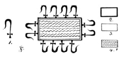

V. BÖLÜM
KUTSAL MISIR YAZILARI-ÖLÜLER KİTABI
I. Bölüm’de Mısır Ölüler Kitabı’na değinmiştim. Bu kitap insanoğlunun anayurdunun, kayıp kıta Mu’nun, gerçekten de insanın ilk yaşam alanı olduğunu; diğer ülkelerin yalnızca gelişmiş bir merkezin, yani görülen ufkun ötesindeki topraklara koloniler kurmuş yüksek bir uygarlığa sahip Mu kıtasının yörüngesinde dönen uydulardan ibaret olduğunu kanıtlayacak birçok bilgi içerdiğinden; bu noktada Ölüler Kitabı hakkında birkaç söz söylemek bana yersiz gelmiyor.
Bu kutsal yazının bilinen genel adı “Ölüler Kitabı.” Mısır hiyerogliflerinde bu ad, Permhru şeklinde yazılıyor. Mısır, bilimcilere göre per, “açığa çıkmak”, hru, “gün” anlamına geliyor ve m de “den” anlamına gelen bir edat.
Fakat Mısırbilimciler (ejiptolog) bu kitabın adının kesin anlamı konusunda hemfikir değiller. Chapitres Supplementaires du Livre des Morts adlı eserinde Dr. Pleyte, ismin “günden öteye uzanan” şeklinde okunması gerektiğini söylüyor. Brugsch, Steinschrift und Bibelworth’un 257. sayfasında doğru anlamın “Gün ile akıp gidenin kitabı” olduğunu öne sürüyor. Lefebure, Maspero ve Renouf, okunuşun “Gün ile açığa çıkan” olduğunu söylüyorlar.
Bu büyük Mısırbilimciler fikir uyuşmazlığı yaşarken, hangi okunuşun doğru olduğuna kim karar verebilir? Bana kalırsa bu sorunun tek çözümü, kitabın aslında neden bahsettiğini ve bunun gerçekte ne anlama geldiğini göstermek; zira kitabı oluşturan yazıların tümü sembolik ve neyi temsil ettiklerini bilmek gerekiyor. Bu ise şimdiye dek hiçbir Mısırbilimci tarafından başarılamadı.
Ölüler Kitabı, Mısırlıların ve diğer tüm halkların atası olan ve Mu’nun yıkımında hayatını kaybeden sayısız insana ithaf edilmiş kutsal bir anıt. Bahsedilen “ölü”ler bunlar. Anayurda karşı duyulan bu sevgi ve bağlılık ile atalara hissedilen bu sevgi ve saygı, geçmişte ve günümüzde dünyada böylesine sık rastlanan “atalara tapınma”nın kökenini oluşturuyor. Biz de kendi aramızda bunun bir yansımasına sahip değil miyiz? Vefat edenlerin mezarlarına çiçekler bırakmıyor muyuz?
Mısırbilimcilerle Permhru’nun anlamı konusunda kesinlikle katılmıyorum. Per’in anlamı “öteye uzanmış”; her’in anlamı “gün” ve m ise Mu. Mısırbilimcilerin bir edat olarak tanımladığı m harfinin aslında bununla hiçbir ilgisi yok. Bu bir sembol, sembolik bir harf ve aynı zamanda Mu’nun adı; dolayısıyla Permhru, “Mu, günden öteye uzandı” anlamına geliyor. Bu, daha önce söylediğimle uyum gösteriyor. Ölüler Kitabı, Mu’nun yok oluşu sırasında hayatını kaybeden 64 milyon insana ithaf edilmiş kutsal bir anıt.
Doğuda, doğunun en yetenekli alimleriyle çalışarak geçirdiğim yıllar, Ölüler Kitabı’nda yer alan ezoterik anlamların birçoğunu öğrenebilmemi sağladı; çünkü unutulmamalı ki antik Hindistan ve Mısır öğretileri arasında yakın bir ilişki var. Yukarı Mısır, Hindistan’dan gelen Mayalar tarafından kolonize edilmişti ve Maioo’daki yerleşimleri tamamlandığında bir grup Naacal “Yedi Kutsal İlhamlı Metin” öğretisini, dini ve bilimleri yaymak üzere Hindistan’dan ayrılarak Mısır’a gitmişti; dolayısıyla Hindistan’da edindiğim öğretilerin genel olarak Mısır için de geçerli olduğu görülebilir.
Ölüler Kitabı’nın ilk yaratıldığı tarih bilinmiyor; öte yandan, görünüşe bakılırsa kitabın ilk nüshaları yalnızca birkaç bölümden oluşuyordu ve kitap şimdi bildiğimiz hâle gelene dek üzerine eklemeler yapılmaya devam etti. Bu bağlamda Hindu kitabı Maha Bharata’nın bir benzeri olduğu söylenebilir, çünkü o da kısa bir kitap olarak başlamış ve zamanla büyümüştür.
Ölüler Kitabı’nın her bölümü doğrudan veya dolaylı olarak Mu’dan bahsediyor ve kitap, daha insanoğlu Mısır topraklarına ayak basmamışken Mu’yu temsilen kullanılan sembollerle dolu. Belirtildiği gibi Mu önce depremlerle parçalara ayrıldı, sonra da derinlerin alevleri arasında batarak, yanan bir uçuruma veya çukura gömüldü. Şimdi Ölüler Kitabı’ndan desenler alıp bunları deşifre ve tercüme edecek ve Ölüler Kitabı ile insanoğlunun anayurdu Mu arasındaki bağlantıyı göstermeye çalışacağım:

I. Desen
I. Desen: Ölüler Kitabı’nda bulunan bu bileşik sembol veya desen, Mu’nun yıkımını anlatıyor.
Alevleri temsil eden Mısır sembolü.
Anayurdun simgesi hiyeratik M harfi, aynı zamanda onun alfabetik ve geometrik sembolü ve Mu’yu temsil eden semboller arasında en sık kullanılanı.
Uçurum, havuz veya çukuru betimleyen antik bir sembol.
4. Bu havuz veya uçurumun alevlerle dolu hâli. Dolayısıyla desenin açılımı şu: “Mu bir ateş uçurumuna düştü, batarken alevler yükseldi ve onun her yanını sardı.” Bu, ikinci şeklin, yani Mu’nun etrafını saran alevlerle gösterilmiş. Oldukça sık kullanılması sebebiyle en dikkat çekici sembollerden biri, üzerinde batmış bir güneş ve güneşin tepesinde ölü ve kapanmış bir lotus ile gösterilen sıradan bir sunak.
Bu bileşik sembol, Ölüler Kitabı’nın desenleri arasında defalarca görülüyor; dikkate değer bir noktaysa lotusun kitap boyunca her zaman ölü ve kapanmış hâlde resmedilmiş olması.
II. Desen
Bu ufak deseni deşifre ve tercüme edeceğim:
1. Klasik bir Mısır sunağı.
2. Mu’nun sembolü olan kutsal lotus çiçeği.
3. Işığı olmayan bir güneş, güneşin battığını ve ufkun ötesine geçtiğini temsil ediyor. Mu’nun altında yer alması, güneşin Mu’nun ufkunun altına indiğini gösteriyor. Güneş, ölü Mu’nun üzerinde sonsuza dek batmış hâlde. Her şey karanlıkta. Mu “karanlık bölge”nin içinde. Mu’nun sulara gömülmesinden önceki sembolü üç uçlu bir şekildi (4. resim) ve “Batı Toprakları”nı, yani anayurdu oluşturan üç kara parçasını temsil ediyordu.
Mu’nun batışından sonra coğrafi konumu “karanlık bölge” adını aldı ve bu hâliyle kıta, şeklin orta ucunun üzerine ışık saçmayan bir güneş yerleştirilerek betimlendi (6. resim). Zaman zaman orta uç tamamen çıkarıldı ve onun yerini ışıksız güneş aldı (5. resim).
Ölüler Kitabı’nın 81. bölümündeki süslemeyi Mısır bilimciler “bir lotus çiçeğinin içinden uzanan baş” şeklinde tanımlıyorlar.
81. kısmın son satırı şöyle: “Ben Güneşin Tarlaları’nda açmış saf bir lotusum.”
Bu desenin deşifre edilişi ise şu şekilde:
Baş, başlığından görüldüğü üzere bir Mısırlıyı, Mısırlıları temsil ediyor. Baş, lotustan dışarı uzanıyor. Lotus ise ölü ve kapanmış hâlde gösterilmiş. Bu desen de lotus, ölmüş olan Mu.
Tercüme edildiğinde ortaya şu sonuç çıkıyor:
“Mısırlılar Mu’dan, ölü ve artık var olmayan bir diyardan geldiler.”
Bu son satır, tüm bölümün en vurucu noktası.
“Ben saf bir lotusum” sözü, “Ben Mu halkının saf soyundanım” anlamına geliyor. “Güneşin Tarlaları’nda açmış” sözü de Güneş İmparatorluğu anlamında, bu da Mu’nun imparatorluk adı. Anayurt dilinde Mu, “ana, yurt, tarla, ülke, imparatorluk” ve “ağız” anlamlarına geliyordu.
Bu desenin serbest okuması şöyle olacaktır: “Ben saf soydan bir Mısırlıyım. Atalarım artık yitip gitmiş anayurt Mu’dan, Güneş İmparatorluğu’ndan geliyor.”
Yer darlığı Ölüler Kitabı’ndan başka desenleri deşifre etmeme izin vermeyecek. Sadece onlar bile büyük bir cildi doldurabilirdi. Tek bir not daha eklemek istiyorum. Bu da Mısır kaynaklı fakat Ölüler Kitabı’nda yalnızca kısmen yer alıyor. Mısırlılar dahil tüm antik halklar, ruhun başka bir bedende yeniden dirileceğine inanıyorlardı. Eski Doğu tabletlerimiz bize eskilerin, enerjilerin köken ve işleyişlerini anladıklarını ve bir enerjinin, doğa tarafından verilmiş görevini yerine getirdikten sonra zayıf düştüğünü, fakat ölmediğini bildiklerini gösteriyor. Bir enerji ancak bir element kadar ölümlü olabilir. Zayıf düşmüş bir enerji yenilenmek için oluştuğu kaynağa çekildikten sonra doğanın deposuna aktarılır ve doğanın yeni çağrısına kadar burada bekler. Eski tabletlerin bize söylediği bu.
İnsan ruhu, dünyayla bağlantı enerjiler arasında, Tanrı haricinde en güçlü olanı. İnsanın ruhu Mu diyarında, Batı Toprakları’nda beden bulmuştu. İnsan bedeni son uykusuna yattığında ve vücudu çürüdüğünde ruhu, beden ile beraber ölmez; bunun yerine -eskilerin inancına göre- yeniden doğuşunu beklemek üzere beden bulduğu yere, Mu’ya döner.
Aşağı ve Yukarı Mısır’ın tek bir krallık hâline geldiği Menes’in zamanından, M.Ö. 2700’e kadar Mısır’da Doğu kültü ve Batı kültü olarak adlandırılan iki dini inanış bulunuyordu. Aşağı Mısırlıların inancına göre ruh yeniden dirileceği yere gitmek için batıya yol almalıydı. Yukarı Mısırlılar ruhun gökteki cennete ulaşmak için doğuya gitmesi gerektiğini iddia ediyorlardı. İki kült de ruhun, atalarının Mısır’a gelmek için izledikleri yolu kullanarak yeniden doğuş yerine gitmesi gerektiğini öne sürüyordu. Sözü geçen inançlara bakıp profesyonel Mısır bilimcilerin bu zıt kültler hakkındaki teorilerini okuduğunda insan kendisini gülmekten alamıyor; çünkü şimdiye dek bu iki kültün kaynağını ve sebebini açıklayabilecek tek bir Mısır uzmanı bulabilmiş değilim. Yine de bu problemin çözümü, şimdiki açıklamanın da göstereceği gibi çok basit.
Aşağı Mısır’a anayurttan yerleşim, Mayax ve Atlantis üzerinden gerçekleşmişti ve bu iki yer de Mısır’ın batısında bulunuyordu; dolayısıyla Aşağı Mısır’dan, atalarının geldiği yolu takip ederek yeniden doğacağı yere gidecek bir ruh batıya dönmeliydi. Yukarı Mısırlılar, anayurttan Mısır’a, Burma ve Hindistan üzerinden gelmişlerdi. Bu ülkelerin ikisi de Mısır’ın doğusunda yer alıyor; yani Yukarı Mısırlıların ruhları, yeniden doğacakları yere atalarının geldiği yolu kullanarak ulaşmak için doğuya dönmeliydiler. Dolayısıyla, bunu fark etmeleri yüzlerce yıl almış olsa da iki kültün de haklı olduğu görülüyor.
Donald A. Mackenzie’nin sözleriyle; “İki antik Mısır inanışının; aslen batıda yer alan bir cennete inanan Osiris kültüyle, cennetin doğuda bulunduğuna inanan güneşe tapanlar kültlerinin birleşimi. Tanrısallaştırılmış antik bir kral olan Osiris, batı kültünün tanrılarıyla özdeşleştirilmişti. Bu iki kült arasındaki ilk anlaşmazlıklara, M.Ö. 2700 yılına kadar uzanan mezar yazılarında rastlanıyor.”
Tüm Mısır bilimciler gibi, Mackenzie’nin semboloji konusundaki bilgisi de oldukça yetersiz. Hepsi sembol ile bunun temsil ettiği şeyi ayırt etmekte güçlük çekiyor. Eskilerin Tanrı’nın her özelliği için özel bir sembol kullandıklarını; güneşin ise Tanrı’nın tüm özelliklerinin kolektif bir sembolü olduğunu, dolayısıyla da bizzat Tanrı’yı temsil ettiğini unutuyorlar.
Yukarı Mısırlılar, Mackenzie’nin dediği gibi güneşe tapanlar değillerdi. Ra, yani güneş, bu insanların kolektif Tanrı sembolüydü. Tanrısallığı simgelediği için Ra adına tapınaklar inşa ediliyordu, tıpkı günümüzde haçın İsa’yı temsil etmesi gibi.
Bir sembol, temsil ettiği kavrama yakınlaştıran; ona odaklanmayı, yakın hissetmeyi ve onu zihinde canlandırmayı kolaylaştıran, samimi bir hatırlatmadır. Sembollerin kullanımıyla dışarıdan gelen düşüncelerin çoğu uzaklaştırılabilir. Sembol, daha yoğun bir konsantrasyona imkân tanır.
Mackenzie, Osiris’in antik bir kral olduğunu iddia ediyor. Hangi halkı yönettiğini belirtmese de kastettiği halk Mısırlılar olmalı. Eğer öyleyse yine yanılıyor, zira Thoth Sais’te ilk Aşağı Mısır kolonisini kurduğunda Osiris dinini öğretiyordu ve bu, çeşitli papirüslerin gösterdiği gibi 16 bin yıl önceydi. İki farklı kaynakta Osiris’in 18 bin veya 20 bin yıl önce Atlantis’te yaşadığının ve büyük bir din adamı -bir üstat- olduğunun belirtildiğini görüyorum.
İki Mısır kültü, insanın dünya üzerinde ortaya çıktığı yerin Mu olduğuna ve Mu’nun Pasifik’te yer aldığına başka bir inandırıcı kanıt sağlıyor. Kıtanın coğrafi konumu bu sayede Burma’nın doğusu ve Mayax’ın batısı, dolayısıyla Pasifik Okyanusu olarak kesinlik kazanıyor.
Anayurdun yıkımı dini törenlerde de anılıyordu. Bir adayın ikinci mertebeye yükselişi, kendisine atalarının ve sevgili anayurdunun başına gelenleri hatırlatmak, ayrıca ruhunun yeniden doğmak için nereye gitmesi gerektiği hakkında bir ipucu vermek için, adayın sembolik olarak bir ateş havuzuna batırılması ile gerçekleşiyordu. Buna Ölüler Kitabı’nın 22. bölümünde şu sözlerle değiniliyor: “Ben geliyorum, ateş gününde kalbimden geçeni yerine getiriyorum, alevleri onlar daha parlar parlamaz söndürerek.”
Belgeler hakkındaki kısmı sonlandırmadan önce, Pasifik Okyanusu’nu çevreleyen tüm bölgelerden benzer kayıtlar göstermenin doğru olacağını düşünüyorum. Bu, okuyucunun durumu ve gerçekleri tamamıyla kavramasına yardımcı olacak. Öncelikle sekiz ışınlı güneşi, yani Güneş İmparatorluğu Mu’nun Kraliyet Arması’nı ele alacağım.
Mu’nun kraliyet arması.
Bu özel tasarım, İngiliz Kolombiya’sında yaşayan bir Kootenay Kızılderilisi’nin elbisesinde bulundu. Başka bir Kootenay Kızılderilisi’nin elbisenin kenarları, “batık Mu” sembollerinden biriyle süslenmişti. Güneş sembolünü taşıyan kıyafet siyahtı; güneş soluk sarı, ışınların uçları soluk çivit mavisi ve ışınların uçlarıyla güneş arasındaki kısım kızıla çalan soluk pembe renkteydi. Kuzey Amerika’nın kuzeybatı kesimlerindeki yerliler arasında ünlü totem direkleri görülüyor.
Sık, karışık tropik bitkilerden oluşmuş devasa, balta girmemiş bir orman Yucatan’ın güney kısmını kaplıyor ve Guatemala’ya kadar uzanarak bu ülkenin yarısını örtüyor. Chipas ve Tabasco’ya yayılıyor ve Honduras’a kadar devam ediyor. Bu büyük orman hiç de ilkel değil, çünkü bir zamanlar burası büyük şehirler ve işlenmiş topraklarla doluydu. Artık geçit vermez durumdaki bu yaban bölgede harabeler, büyük, heybetli harabeler yer alıyor ve eğer bu engin tropik ormanın kıyısında yaşayan Kızılderililerin -Copan ve Quiriguaların- öykülerine kulak verecek olursak, bunlar ormanın derinlerinde saklı, beyaz adamın erişiminden uzakta yatan daha da büyük kalıntıların örneklerinden başka bir şey değil.
Şahsen ben Kızılderililerin öykülerinin gerçekliğine inanıyorum, çünkü harabelerden batıl bir dehşetle bahsediyorlar ve bu da öykülerine inandırıcılık katıyor. Kızılderili hikâyelerin ötesinde, bu hikâyeleri doğrulayan Mısır belgeleri mevcut. Bu orman, “toprağın üzerinde yuvarlanan devasa tufan dalgaları tarafından” harabeye çevrilen ve “neredeyse tüm halkını kaybedip” geçilmez kılınan “ötedeki ülke”nin bir parçası.
Bu medeniyet 11.500 ile 11.750 yıl arası bir süre önce, bölgenin etrafından ve altından geçen gaz kuşaklarının alevlerle
Orta Amerika, Qurigu’daki Bir Obelisk
James Churchward tarafından çizilmiştir
Büyük Uygur İmparatorluğu’nun Haritası
şekillenmesi ve bölgedeki dağın yükselişi sırasında, Atlantis’in batışından kısa bir süre önce tamamen ortadan kalktı ve şehirleri harabeye döndü. Mısırlıların, böylesine yıkıcı bir felaketten sonra ülkenin “geçit vermez” olduğunu söylemeleri, şüphesiz durumu tarif etmenin hafif bir yolu.
Honduras, Copan’da; Guatemala, Quiruga’da; Salvador, Opico ve Cirraca-Mecallo’da devasa, tarih öncesi yıkıntılar yer alıyor. Tüm bu yıkıntılarda Mu ile ilgili semboller bulunuyor. Quirigua’da kayda değer bazı dikilitaş veya anıtlar bulunuyor. 13 taneler ve üzerlerine kazınmış sembolik insan figürlerinin başlarında anayurda bağlılıklarını gösteren üç uçlu taçlar var. Bu dikili taşların tümünün, çeşitli krallık hanedanlarına ait olduklarını gösteren farklı bir totem sembolleri var. Antik hanedanların her birinin farklı bir totemi vardı: Fil, Kaplan ve Yılan gibi. Dolayısıyla, Kuzey, Orta ve Güney Amerika’nın batı kısmı boyunca bulunan ve bize Mu’nun anayurtları olduğunu söyleyen kesintisiz bir belgeler zinciri mevcut.
Güney Denizi Adaları yerlileri arasında ve bu küçük toprak parçalarında yatan harabelerin taşlarındaki sembollerden bahsettim. Daha sonra Güney Pasifik’ten Yeni Zelanda’ya geçtim, yani okyanus etrafındaki çemberi tamamlama işi Asya’ya kalıyor. Burma ve Hindistan, Mu hakkında belgelerle dolu ve daha önce de gösterdiğim gibi bu belgelerin tümü Amerika’da bulunanlarla birebir örtüşüyor.
Sanırım sembollerin bile tek başına kanıtladığı Mu’nun insanoğlunun anayurdu olduğu gerçeğini en şüpheci akla bile kabul ettirmek için tek gereken Uygur belgeleri. Uygur, doğu yarısını yok eden Kitabı Mukaddes’teki “Büyük Tufan” zamanında, Mu’ya ait koloni imparatorlukları arasında en önemlisiydi.
Çin efsaneleri Uygur İmparatorluğu’nun yaklaşık 17 bin yıl yıl önce gücünün doruğunda olduğunda söylüyor. Bu tarih, coğrafi kanıtlarla da uyuşuyor. Uygur İmparatorluğu güçlü kollarını Pasifik Okyanusu’ndan Orta Asya’ya ve Kızıl Deniz’in ötesinden Doğu Avrupa’ya kadar uzatmıştı. Bu, İngiliz adaları Kıta Avrupasından ayrılmadan önceydi.
Uygur İmparatorluğu’nun güney sınırı, Cochin Çin’i (Güney Hindistan’da Kerala eyaletine bağlı bir şehir), Burma, Hindistan ve Pers ülkesinin kuzey sınırlarındaydı. Bu, Himalayalar ve diğer Asya dağları yükselmeden önceydi. Kuzey sınırları Sibirya’ya kadar uzanıyordu, fakat ne kadar içlerine uzandıklarını söyleyen hiçbir belge yok. Sibirya’nın güney kısımlarında şehirlerinin yıkıntıları bulunmuş durumda.
Zamanla Uygurlar, çok eski bir Hint belgesinde bahsedildiği gibi, Hazar Denizi’nin batı ve kuzey kıyıları boyunca ilerleyerek Avrupa’ya uzandılar. Buradan devam ederek Orta Avrupa üzerinden batı sınırlarına, İrlanda’ya ulaştılar. Kuzey İspanya’ya, Kuzey Fransa’ya ve Balkanların içlerine yerleştiler. Yakın zamanda Moravia’da yapılmış arkeolojik keşiflerde bulunan kalıntılar Uygurlara ait ve etnografların, insanoğlunun Asya’da ortaya çıktığı yönündeki teorilerini dayandırdıkları kanıtlar Avrupa’da ilerleyen Uygurların bıraktığı izlerden oluşuyor.
Uygurların tarihi, Arilerin tarihidir. Etnografların Ari olarak sınıflandırdıkları beyaz ırklardan bazıları, tamamen farklı bir kolonileşme yoluna ait. Uygur İmparatorluğu’nun başkenti Gobi Çölü’nde, şimdi Khara Khota’nın bulunduğu yerdeydi. Uygur İmparatorluğu’nun zamanında Gobi Çölü oldukça bereketli topraklara sahipti.
Uygurlar kültür ve medeniyet yönünden çok ileri bir seviyeye ulaşmışlardı. Astroloji, madencilik, tekstil, mimari, matematik, tarım, edebiyat ve tıp alanında bilgiliydiler. İpek, metal ve tahta üzerine dekoratif işlemeler konusunda uzmanlaşmışlardı. Tüm bunlar Mısır tarihinin başlangıcından önceydi.
American Weekly’nin izniyle
Bir Uygur kraliçesi (solda) ve refakatçisi
Uygur İmparatorluğu’nun yaklaşık yarısı Mu batmadan önce, geri kalanıysa Mu’nun batışından sonra yok oldu. Profesör Kosloff, Khara Khota’da yerin 50 feet altında bir mezar ve içinde olağanüstü hazineler buldu ve hiçbir şeye dokunmasına veya bunları dışarı çıkarmasına izin verilmediği için bu eserleri fotoğraflayarak belgeledi. American Weekly’nin izniyle bu fotoğraflardan birkaçına erişmeyi başardım ve bunlardan ikisini deşifreleriyle beraber burada yayımlıyorum. Sanırım bu fotoğrafların 16 bin yıl ile 18 bin yıl önceye ait bir zamanı temsil ettikleri düşüncemde yanılmıyorum.
Bu fotoğraflar sembolik; çeşitli kaynaklar bize bunların kim olduklarını, ne olduklarını söylüyor. İpek üzerine yapılmış bu resimler, bir kraliçeyle refakatçisini oturur konumda tasvir ediyor. Kraliçenin sembollerinden bahsedeceğim. Başındaki üç uçlu tacın merkezinde, üç set ışın saçan olan bir disk bulunuyor. Gövdesinin arkasında geniş bir disk, yani güneş yer alıyor. Başının arkasında daha ufak başka bir disk var, bu da ikincil başka bir güneş. Büyük olan disk Mu’yu, küçük olan ise Uygur Koloni İmparatorluğu’nu temsil ediyor. Yalnızca yarısından güneş ışınları çıkan tacı, koloni imparatorluğun armasını gösteriyor. Sol elinde tuttuğu hükümdarlık asası üçlü çatal şeklinde; üç ucu anayurdun rakamını veriyor.
Uygur hükümdarlarının taşıdığı asa. Buradaki, Kraliçe’nin elinde görülenden
daha yakın bir tarihe ait. İkisinde de üç uçlu çatal form göze çarpıyor.
Tahtı anayurdun çiçek sembolü olan açmış kutsal lotus şeklinde; kraliçe, anayurt Mu’nun dizine oturmuş ve onun sayesinde dik durmuş hâlde betimlenmiş. Refakatçisinin asası yok, ışınları olan bir güneş yerine de bir küre taşıyor. Onun tacı da anayurdun rakamını veriyor.
Kosloffun çeşitli hükümdarlık asalarıyla ilgili fotoğrafları vardı. Bu çizimdeki, kraliçenin elindekinden farklı bir motifte ve daha yakın bir tarihe ait olsa da sembolik olarak anlamı aynı: Üç parçaya ayrılmış ucu anayurdun rakamsal değerine karşılık geliyor.
Böylece Asya, Amerika, Güney Denizi Adaları ve Yeni Zelanda sembollerinin anlattıkları hikayede hemfikir olduklarını görüyoruz. Yaşlı atalarımız mezarlarından çıkıp, Mu topraklarında başlarından geçeni kendi ağızlarından bize anlatmadıkları sürece, bu kanıtlardan daha kesin ve ikna edici bir şey olabilir mi?